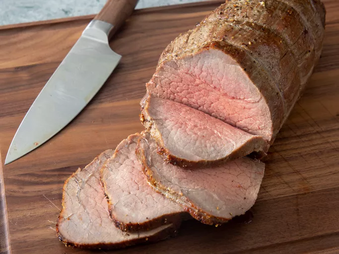

Home
Roast Beef

Homemade Roast Beef
This tender and flavorful roast beef is perfect for special occasions or Sunday dinners. Seasoned with herbs
and spices, it's roasted to perfection and pairs wonderfully with mashed potatoes and gravy.
Ingredients
- Beef roast
- Olive oil
- Garlic
- Fresh herbs
- Spices and seasonings
- Vegetables (optional)
Steps
- Preheat your oven to 350°F (175°C).
- Rub the beef roast with olive oil, garlic, and seasonings.
- Place the roast in a roasting pan.
- Add vegetables around the roast if desired.
- Roast for 20 minutes per pound or until the internal temperature reaches 135°F (57°C) for medium-rare.
- Let the roast rest for 10-15 minutes before slicing.
- Serve with your favorite sides and enjoy.